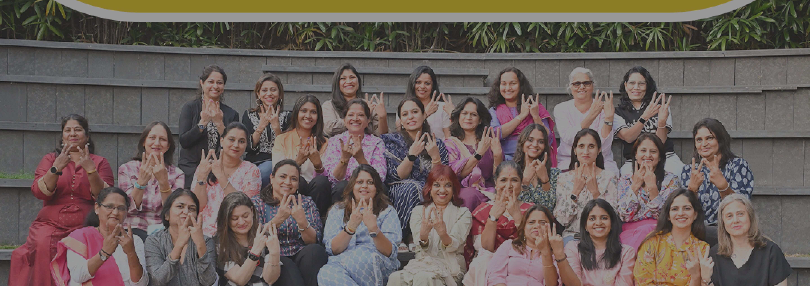

Our LEADERS
Our LEADERS
At Vishwakarma Group of Schools, we are driven by a vision of empowering young minds and shaping the leaders of tomorrow. Our dedicated leadership team is at the heart of this mission, providing strategic direction and fostering a culture of innovation and excellence.
Our leaders are passionate educators committed to creating a dynamic, supportive, and inclusive learning environment. They are dedicated to nurturing every student’s intellectual, emotional, and social growth, ensuring they are well-prepared for the challenges and opportunities of the twenty-first century.
Dr. Trupti Agarwal
Chairperson, Vishwakarma Group of Schools
Director, Wisdom World School and Universal Wisdom School
A strong woman driven by passion, humility, and compassion, Dr. Trupti Agarwal believes that education must be impartial. Regardless of gender, background, and ethnicity, all children deserve the opportunity to seek an education for a better future. Echoing this belief, she plays an active role in framing the Educational Policies of all the schools that she heads. Boldly leading these institutions with a current total strength of approximately 10,000 students and 700 educators, she takes on full responsibility for the entire infrastructural development and performance management of the Vishwakarma Group.
Affirming her passion for educational provisions and reformations, she obtained her Ph.D. in Educational Psychology from Vishwakarma University in July 2022. With a mission to make quality education accessible to India's children and youth, Dr. Agarwal has positively changed the lives of thousands of students who have studied in the educational institutions she leads. She is the Chairperson of the Vishwakarma Group of Schools, Vishwakarma Vidyalaya, and a member of the Bansilal Ramnath Agarwal Hindi Vidyalaya Managing Trust. Dr. Agarwal takes a personal interest in steering graduation courses in diverse streams like fashion designing, interior designing, animation, mass communication, and fine arts, which exhibits her commitment to providing industry-relevant, skill-based education to students.
Dr. Agarwal extends her involvement in education to the CISCE Board as the Co-Founder of Wisdom World School, Wakad and Hadapsar, and Universal Wisdom School, Balewadi, which offers international curricula, holding the position of Director on its Boards.
Ms. Sarabjeet Kaur has over twenty years of rich and diverse experience in education. A true-blue learning leader with strong interpersonal skills, Ms. Kaur is an expert in implementing national and international boards/ curricula like CBSE, CIE, and IB.
With a strong understanding of the fundamentals of education and related dynamics, she has been a valuable resource for numerous workshops on topics like Mental Health, Dolphin Parenting, Child Abuse Prevention, Stress Management, and NEP 2020.
Ms. Kaur’s ideology of proper education is inspired by and resonates with the profound words of Nelson Mandela, “Education is the most powerful weapon which you can use to change the world.” She accentuates that holistic education is incomplete without educating the mind and connecting to the soul within. For her, other than the hardware of the school, which is visible, it is equally poignant to emphasise the software known as life skills and value education.
Ms. Justine Simoes
Director, Schools Program - Vishwakarma Purple Educational Trust
Principal, Wisdom World School, Wakad
Wisdom World School is privileged to have Ms. Justine Simoes at the helm as the Director of Schools Program and Principal of Wisdom World School, Wakad, Pune. With a distinguished career spanning over three decades, Ms. Simoes brings a wealth of experience and a passion for education to Wisdom World School as its Founding Principal.
Before joining Wisdom World School, Ms. Simoes dedicated twenty-four years of her career to St. Mary's School, Pune. Her roles included Vice Principal and Principal of the School, and Principal of St. Mary's Junior College (ISC).
Ms. Simoes is passionate about inspiring and empowering young minds. She believes in creating a holistic learning environment that nurtures students' intellectual, emotional, and social development. Her exceptional contributions to the field of education have been recognised nationally and internationally. She has travelled extensively to international schools and conferences, bringing back innovative ideas and best practices to implement at Wisdom World Schools.
Ms. Ana Dominguez
Principal, Universal Wisdom School
Universal Wisdom School, Balewadi, is led by Ms. Ana Dominguez as Principal. She has over twenty-five years of experience in international education, having worked at all educational levels in Spain, Latin America, the Middle East, and China. She has been in India for over five years. Exposure to this wide array of environments has given her a multicultural perspective.
Ms. Dominguez is native to Spain and holds a University Expert Diploma in International Education and IB. She continues her learning journey with educational leadership and positive psychology courses. In addition, she has taught English, Spanish, Theatre, and Literature as a teacher.
Passionate about education, her profession is a way of life for her, not a job. She believes a school must be a happy place that encourages discovery and curiosity and prepares students for life with a combination of values, skills, and knowledge. She enjoys reading, theatre plays, movies, music, and sports. She is also an avid traveller who has visited over forty countries and has many more on her bucket list.
With over three decades of experience in education, Mrs. Amita Seth has been a driving force in shaping young minds. Her expertise spans various curricula, including ICSE, IB, and IGCSE. As the Principal of Wisdom World School, Hadapsar, she has been instrumental in implementing innovative programs that promote holistic development and enhance student learning experiences.
One such initiative is the Small Group Instruction program, which provides tailored support to students requiring additional assistance. Under Mrs. Seth’s leadership, this program has significantly improved student outcomes. She is deeply committed to fostering a collaborative learning environment and emphasises the importance of partnerships between parents, teachers, and the community.
Mrs. Seth's dedication to education has been recognised with multiple 'Best Teacher' and 'Teacher of the Year' awards. These accolades are a testament to her unwavering commitment to nurturing the next generation of leaders.
Mrs. Madhu Shitole
Director, Vishwakarma Vidyalaya
Mrs. Madhu Shitole brings a wealth of experience and unique expertise to her role. With a diverse academic background in Psychology, Education, Law, and Management, she has a deep understanding of the educational landscape. Her international experience at the Hinckley and Bosworth Borough Council in the UK further enriches her perspective. Since joining Vishwakarma Vidyalaya in 2010, she has held various positions, including Pre-Primary Principal and Assistant Director, before assuming the role of Director in 2023.
As a visionary leader, Mrs. Shitole is committed to driving innovation and excellence in education. She focuses on optimising resources, upgrading infrastructure, empowering teachers, leveraging technology, and ensuring regulatory compliance. By fostering strong relationships with students, parents, staff, and external stakeholders, she creates a supportive and nurturing environment. Her ultimate goal is to establish Vishwakarma Vidyalaya as a premier State Board School in Pune and expand the network of schools to make quality education accessible to all children.
Mrs. Sulbha Deshmukh joined as a teacher in Vishwakarma Vidyalaya in 1991 and has a total teaching experience of thirty-three years. She has headed Vishwakarma Vidyalaya as a Principal since 2001 and has seen its growth from its inception to junior college. She has encouraged, motivated, and worked for the careers of around 3,000+ students.
Mrs. Deshmukh has tried to motivate the staff and students and build confidence to utilise their potential to the maximum extent with a positive approach. Under her guidance, the team works hard to bring academic progress and the students' all-around development. She has taken the initiative to establish the ATAL Tinkering lab, where students perform STEM activities. The students have won many laurels in Science and Technology and Sports at National and International levels under her guidance. She believes that a stable mind is a way to progress. To keep their mental health in check, she takes meditation sessions – Sahajyoga - for students, staff, and parents and has helped many of them to overcome depression, health issues, and stress. She has also worked in the Inspection Panel of the Zilla Parishad for Enhancement of Quality Education. She is also the Centre Incharge of the H.S.C. Exam.
She is the recipient of awards like Guruvarya Puruskar, Sane Guruji Value-based Teacher Award, Best Teacher Award from the Zilla Parishad, Avantika Award, Dr. Abdul Kalam Inspirational Award, and Best and Ideal Principal Award from various organisations at the state and national levels.
Having served over twenty-seven years at Vishwakarma Vidyalaya, including twenty years as a teacher and seven as Principal, Mrs. Sunanda Sarde is a passionate educator committed to shaping young minds. She holds a D.Ed. from Parvatibai Hingane Training Institute, a B.Ed. from Pune University, and a D.S.M. and B.A. from Tilak Maharashtra Vidyapeeth. She was awarded the 'Best Principal' by the Maharashtra State Principal's Association.
Mrs. Sarde champions modern education through continuous professional development and innovative teaching practices, ensuring her staff and students stay ahead in an evolving world. Her leadership has transformed the school with initiatives like classroom reading corners, practical vegetable markets, and activity-based learning experiences.
She creates a culture of inclusivity and holistic development by involving parents, supporting underprivileged students, and fostering experiential education. Through her dedication and vision, Mrs. Sarde cultivates resilient, compassionate citizens ready to make meaningful contributions to society.
Mr. Rajendra Jadhav attended Aadarsh Vidyalaya in Shirwal and graduated with a degree in Science (Physics) from Kisan Veer Mahavidyalaya in Wai. He also holds a B.Ed. Degree from Shivaji University, Kolhapur and a Diploma in School Management from Yashwantrao Chavan Maharashtra Open University, Nashik.
As an experienced teacher, he has consistently sought professional development through numerous Maths subject training programs and In-Service Training sessions. He regularly prepares and utilises effective teaching aids to enhance students' understanding of fundamental mathematical concepts. Additionally, he organises extra classes to provide ample practice and skill development opportunities.
He believes that regular extra lectures after school and on holiday improves students practice in Maths. Recognising his students’ diverse backgrounds and experiences, he is adept at creating an inclusive learning environment. He maintains a calm and supportive demeanour, even in challenging situations, fostering a positive and conducive atmosphere for learning. He believes in the holistic development of students and arranges field trips and visits to real-world settings to illustrate the relevance of mathematics in everyday life.
Vishwakarma Group of Schools empowers students to reach their full potential through diverse, inclusive, and holistic education.
Quick Links
Vishwakarma Group of Schools
Vishwakarma Group, 34 A/1 Suyog Centre, 7th Floor, Market Yard Road, Gultekadi, Pune, Maharashtra 411037.
Email : connect@vishwakarmags.com